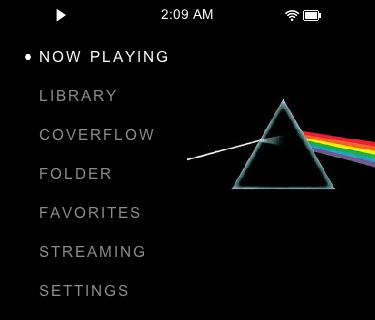
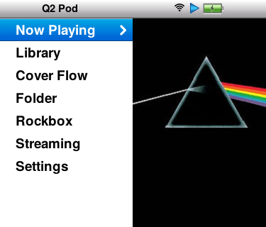
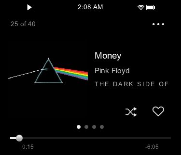
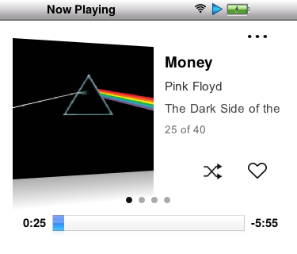

Q2 Pod brings the iPod classic experience to the Shanling Q2. Read this chapter to learn its controls and find your way around.
Q2 Pod runs on top of Shanling’s own firmware. New to it? Start with Start here: play your first song in Chapter 2, then come back.
Get to know the controls on the Q2:
Six controls cover nearly everything: the wheel, Centre, Return, Play/Pause, Next and Previous.
| To | Do this |
|---|---|
| Turn on | Press Centre. |
| Turn off | Hold Centre, then confirm Confirm Shutdown. |
| Turn the screen off (sleep) | Double-press Centre. On Now Playing, press once. Music keeps playing. |
| Wake the screen | Press Centre. |
| Scroll a list | Turn the wheel: one row per tick. Spin faster to speed up. |
| Choose the highlighted item | Press Centre. |
| Go back | Press Return. |
| Play or pause | Press Play/Pause, on any page. |
| Skip to the next or previous song | Press Next or Previous. |
| Change the volume | Turn the wheel outside a list. |
| Jump to Now Playing | Hold Return, from anywhere. Hold it again to go back. |
| See options for a song, album or playlist | Hold Play/Pause on it. |
| Open quick settings | Pull down from the top edge of the screen. |
The Centre button does different things on each screen:
| Screen | Press | Double-press | Hold |
|---|---|---|---|
| Menus and lists | Opens the highlighted item | Turns the screen off | Turns the Q2 off |
| Now Playing | Turns the screen off | Starts seeking (Now Playing) | Turns the Q2 off |
| Video | Starts or stops seeking, 10 s a tick | Does nothing more | Turns the Q2 off |
With Single Press Scrub on (Controls), Now Playing’s press and double-press swap, so it works as other pages do.
Sleep or shut down? Sleep is the screen-off state: music keeps playing and one press wakes it. Shut down stops the Q2. A Q2 left asleep can power itself off later with Standby Limit (Power and battery).
If the Q2 seems dead: if it won’t turn on, or the screen stays black and no button works, plug it into the charger, then hold Centre for 15 seconds. Keep holding through the shutdown prompt until it powers off and restarts.
Once the basics feel natural, these save time.
| To | Do this |
|---|---|
| Go back from Now Playing to where you were | After a hold of Return, press Return or hold it again. With Hold Return: Home, a hold goes Home instead, from anywhere but Home. |
| Song options | Hold Play/Pause on a song, or on Now Playing: rate, queue, favourite, add to a playlist, or go to its album, artist or folder. |
| Album, artist, genre or folder options | Hold Play/Pause on it: queue, shuffle or add to a playlist. Albums can also be favourited and rated. |
| Search your songs | In Library, pull the list down until “Release to search” appears, then type. In the Classic theme, choose Search, the first row. |
| Skip to a point in a song | On Now Playing, double-press Centre, then turn: 5 s a tick (Now Playing). |
| Show lyrics full screen | Tap the lyrics. Tap again, or press Return, to go back. |
| Open Cover Flow’s settings | Hold Play/Pause on Home’s Cover Flow row. |
| Open the EQ | In quick settings, hold Playback. |
| Stop a wheel that keeps scrolling after you lift | Press Return twice quickly. |

Home (Minimal theme)
Home (Classic theme)Home lists Now Playing, Library, Cover Flow, Folder, a shortcut, Streaming and Settings, beside the playing song’s cover. The list wraps at either end. A short Return on Home selects Now Playing; a second one opens it without changing playback.
Across the top: the play state, EQ, the time, Bluetooth, Wi-Fi and the battery. The Bluetooth codec (AAC, LDAC…) shows briefly as headphones connect.
It opens on Home. With Memory Playback → Location your queue comes back, paused; Track starts the song from the beginning unless it resumes (a podcast or audiobook). In-Vehicle Mode starts playing; with Headphones Required on and nothing connected, the queue comes back paused instead.
Pull down from the top edge of the screen. The wheel sets the brightness; hold Play/Pause to switch it to the volume, and again to switch back (your choice is kept). Tap Wi-Fi or Bluetooth to turn it on or off; hold its icon to open its settings. Hold Playback to open the EQ. Output Options switches the headphone jack to Line Out for an amplifier or powered speakers. Line Out sets the volume to maximum, so the Q2 asks first; tap it again to go back before you plug in headphones.
With Q2 Pod you can:
Install Q2 Pod, copy your music to the card and play your first album, in about ten minutes.
Follow these steps in order. Each links to more detail if you need it.
That’s it. The rest of this guide is there when you want it.
You need: a Shanling Q2 with a microSD card, a USB-C cable, and a computer with internet.
Important: Charge the Q2 before you start. Only insert or remove the card while the Q2 is fully shut down (not asleep), or the card can be corrupted.
To install Q2 Pod:
update.tar from the latest release at github.com/DiamondBond/q2-pod/releases/latest.update.tar to the root of the card (not inside a folder), then eject and unplug.Tip: On the old Legacy build? Network Update can’t move you to this one. Install update.tar by hand once, as above.
To add music:
The Library lists every song the scan finds. Settings, ratings, play counts and resume points are kept on the Q2 itself, so they stay when you swap cards.
Choose System settings → Update Library → Scan Folders, tick the folders you copied to, and press Scan. Open a folder, such as Music, to tick the folders inside it. Ticking a whole folder rereads every song in it, as long as a full update.
Shanling rates the Q2 for 20,000 songs. Q2 Pod scans past that, but a much larger library is slower and isn’t guaranteed to work. The scan can sit at No.0 for a long time while it reads the folders: leave it running, or press Return to stop. On a very large card, Songs, Albums and Artists may not list everything; Folder still plays every file.
To keep a folder out of Songs, Albums, Artists, Cover Flow and library shuffle, put an empty file named database.ignore in it and run Update Local Music. Its songs still play from Folder and playlists. An empty database.unignore lets a subfolder back in. Either name can start with a dot, to hide it from other players.
The library is built from your files’ tags. Fix tags on a computer (Mp3tag, MusicBrainz Picard or foobar2000), then run Update Local Music and Refresh Cover Flow (Cover Flow settings).
CD1, Disc 2) count as one album. Two albums with the same name in one folder then merge, so give each its own folder or an Album Artist.Folders go at the card’s root, in any capitalisation; each adds its own Library row when present. Other names, such as Images/, aren’t picked up.
| Path | What it is | Made by |
|---|---|---|
Podcasts/, Audiobooks/ | One folder per show or book; they resume and never count as plays | You |
Photos/ | .jpg, .jpeg, .png (JPEG up to 6 MB, PNG 1 MB); subfolders are albums | You |
Books/ | .txt, .epub (no DRM); one level of subfolders | You |
Videos/ | .mp4, .m4v, .mkv, .avi, .mov, .mpg; one level of subfolders | You |
EQ/ | AutoEQ and Equalizer APO presets to import | You |
Radio/ | Internet Radio playlists, .m3u and .pls | Both |
lockscreenimage/ | Up to 5 lock screen images | You |
_explaylist_data/ | M3U playlists to import, and playlist pictures | Both |
database.ignore | Hides a folder from the Library’s lists (Adding music) | You |
.scrobble.ini | Scrobble accounts (Scrobbling) | You |
.scrobbler.log, .sent | Every listen, in Rockbox’s format, and those already uploaded | Q2 Pod |
.ratings.tsv | A copy of your ratings, to read on a computer | Q2 Pod |
.coverflow/ | Cover Flow’s artwork, and playlist pictures | Q2 Pod |
.photos/, .books/ | Photo thumbnails, and EPUBs converted to text | Q2 Pod |
.sldp/ | Shanling’s own cover cache | Stock |
.spotify/ | The Spotify add-on; cache/ holds your login and downloads | You |
.tidal/ | Tidal songs you’ve played, to replay offline | Q2 Pod |
You can delete .coverflow/, .photos/ and .books/ to free space; Q2 Pod rebuilds them as needed. Cover Flow and Photos need 16 MB free. Don’t delete .spotify/cache/ or .tidal/: that signs you out or removes offline songs. Their size is set in Streaming Configuration.
Find music in your library, see what’s playing, read along with the lyrics, or flip through your albums by cover.
Choose Library from Home, then a list. Press Centre on a song to play it, with the rest of its list after it.
| Library row | What it lists |
|---|---|
| Artists | Each artist opens on their albums, with Songs one tap away |
| Albums, Songs, Genre | Your whole library, alphabetically |
| Era | Each decade with dated albums, oldest first (below) |
| Long Songs | Songs over 10 minutes, longest first (below) |
| Playlists, Ratings | See Chapter 4 |
| Shuffle | Shuffle the whole library (Shuffling your library) |
| Podcasts, Audiobooks, Photos, Books, Videos | Shown when the card has those folders (Chapter 7) |
| Games | Sudoku, Vortex, Solitaire, Snake and your installed games |
| Upload Scrobbles, Update Local Music | See Scrobbling and Adding music |
Pull the Library list down from the top until “Release to search” appears, then type. In the Classic theme, choose Search, the first row. It searches your local songs. In Cover Flow, turn fast to jump an initial at a time.
Library → Era lists each decade that has dated albums, with how many it holds. A decade opens Play All (its albums by year), Shuffle and its albums; Centre on one shows its tracks in Cover Flow. An album’s year is its latest track’s Year tag; albums without one are left out.
Library → Long Songs lists songs over 10 minutes with their length. The first time, it measures any song without a length (“Measuring songs… n/N”); later it lists them at once. Cancel, or leaving, keeps what was measured, and with Scan Song Durations on (Cover Flow settings) the measuring finishes in the background.
Home’s Folder shows the card as it is. Return goes up a level, and from the card’s root back to Home. Folder Root (Library & Folders) opens a folder of your choice instead.
Cover Flow shows your albums as covers to flip through. Run Update Local Music first. The first time it opens it prepares the artwork; Cancel keeps what’s done, and later opens add only new albums and retry any they couldn’t finish.
| To | Do this |
|---|---|
| Browse | Turn the wheel, or swipe: the covers follow your finger and glide on after a flick. Touch them to stop. |
| Bring a cover to the middle | Tap it. |
| See an album’s songs | Press Centre, or tap the middle cover. |
| Move quickly | Keep turning fast: covers speed up to 20 albums a second, and Album and Artist sorts then go by initial, the letter shown large. Slow down to go album by album. |
| Rate, queue or favourite an album | Hold Play/Pause on it. It can also go to the album’s artist. |
cover or folder image (.jpg, .png or .webp) in the album’s folder, otherwise a grey disc. A folder holding several albums doesn’t lend its image to any of them..m4b files, or one under Audiobooks/.
Minimal
ClassicNow Playing shows the song’s place in the queue (“25 of 40”), its cover and details, the play mode and heart buttons, and a progress bar. In Classic the cover leans over its reflection, as on an iPod classic. Tap the cover to see it full screen. Swipe for lyrics, the song’s details and the visualizer; the dots show which page you’re on.
| To | Do this |
|---|---|
| See the song’s options | Hold Play/Pause: the queue, rating, favourites, playlists, shuffle and repeat. |
| Rate the song, or make it a favourite | Hold the heart, turn to 0–5 hearts, and press Centre. A tap makes it a favourite. |
| Skip to a point in the song | Double-press Centre, then turn: 5 s a tick. Double-press, press Return, touch the screen or wait 3 s to jump there. Paused, it stays paused. |
| Change the playback speed | Use the speed control. It applies to every file in that folder (not its subfolders), wherever it plays from, and is kept; normal speed resets it. |
| Turn the screen off, or go back | Press Centre once to turn the screen off. If you came by holding Return, hold it again to go back. |
For synced lyrics, put the song’s .lrc file in the same folder as the song; embedded lyrics may not show. Or, on Wi-Fi, open ⋯ on Now Playing: Download Cover & Lyrics finds them for the playing song, and Download Album Lyrics fills in its album’s missing ones.
Swipe Now Playing to its fourth page for Spectrum, Oscilloscope, VU Meters or Halo. Tap to switch; your choice is kept. It follows what you hear, EQ included.
Rate what you love, gather songs into playlists, and choose how your music plays.
Every song and album can have 0 to 5 hearts. Five hearts is a favourite: Add to Favourites gives five hearts, and rating five adds a favourite.
| To | Do this |
|---|---|
| Rate a song | Hold the heart on Now Playing, or hold Play/Pause on the song and choose Rate. Turn the wheel, then press Centre to save or Return to leave it. Tap a heart to save that many; tap the rating it already has to clear it. |
| Favourite a song, or undo it | Tap the heart on Now Playing. A song rated 1 to 4 shows its number on the empty heart. |
| Rate an album | Hold Play/Pause on it in Cover Flow, Albums or an artist’s albums, then choose Rate Album. Add to Favourites gives it five hearts and makes all its songs favourites; Remove from Favourites undoes both. |
.ratings.tsv, to read on a computer. Editing it changes nothing on the Q2.In Library → Playlists, New Playlist makes one. To add songs, hold Play/Pause on a song, album or artist and add it to a playlist. A playlist’s More menu (its three dots, or hold Play/Pause and choose More…) has Rename, Delete Playlist and Edit Playlist.
While editing a playlist:
| To | Do this |
|---|---|
| Choose a song | Turn the wheel. |
| Move it | Press Previous to move it up, Next to move it down. Centre also offers Move Up and Move Down. |
| Remove it | Press Centre, then Remove from Playlist. It asks first. |
| Add songs | Add Songs opens a picker. Its Search row finds songs by title, artist or album, and stays open while you add several. |
| Finish | Done or Return. Every edit saves as you go; there’s no undo. |
Changes apply the next time the playlist loads; the queue that’s playing keeps its order. Only local playlists can be edited.
In the Classic theme, New Playlist… and Select Playlists… head the list. In Select Playlists, Centre marks a playlist (again clears it); Select All marks every one. Export or Delete acts on the marked playlists (Delete asks first), Import Playlists imports, and Done or Return finishes.
In Classic with Row Art on, and in Playlist View: Cover Flow, each playlist shows a picture. To use your own, put a .jpg or .png named after the playlist (Road Trip.jpg), up to 12 megapixels, in the card’s _explaylist_data folder; write _ for any of \ / : * ? " < > |. A larger picture is passed over. Otherwise it’s the first four album covers among its songs, in the order they were added, repeated when there are fewer. Pictures fill in as the list opens; Refresh Cover Flow makes them all again.
With Playlist View: Cover Flow (Cover Flow settings), Playlists opens as covers, with the name and song count under the middle one. Centre opens a playlist; hold Play/Pause on a cover for its queue and More options, New Playlist and, in Classic, Select Playlists…. A song played from a cover has no Delete in Now Playing’s More, since that would delete it from your library.
The Q2 imports .m3u playlists only from the _explaylist_data folder at the card’s root. Export a playlist once to create it, or make the folder yourself.
To import playlists:
.m3u files into _explaylist_data.A:\Music\Artist\Album\01 Song.m4a, as iTunes exporters write them, or /mnt/mmc/Music/….#EXT, such as #EXTM3U and #EXTINF. Any other line starting with # shows as a broken song, so delete it..m3u files from Folder, in any folder: they play without importing, but can’t be edited. An imported playlist is kept on the Q2, so its file can be deleted afterwards.Library → Shuffle shuffles every song except audiobooks, podcasts and hidden folders:
| Choose | What plays |
|---|---|
| Shuffle Songs | Every song once, in a shuffled order. When all have played, it shuffles again and carries on. |
| Shuffle Albums | Every album once, in a shuffled order, each in disc and track order, then stops. |
| Shuffle Folders | The same by folder, each in path order. |
On Now Playing, hold Play/Pause and choose View Queue to see what plays next: up to 500 songs ahead while shuffling. Hold Play/Pause on a song there to play it next. The same menu sets Shuffle, Repeat and Group by: Album / Folder; changes keep the playing song where it is.
| Shuffle | How the queue plays |
|---|---|
| Off | Albums in the order they first appear, each in order |
| All Songs | Every song in one shuffled order |
| Songs in Album | Albums in order, the songs of each shuffled |
| Albums | Albums shuffled, each in order |
| Albums and Songs | Albums shuffled, and the songs of each shuffled |
| Repeat | What happens at the end |
|---|---|
| Play One Song | Stops after the song |
| Play One Album | Stops after the album |
| Play All | Stops after the queue |
| Repeat Song, Album or All | Plays the song, album or queue again |
Shape the sound with three simple sliders or up to 30 bands, load a preset made for your headphones, and choose how songs flow into each other.
Choose Playback → EQ, or hold Playback in quick settings. It opens on Simple; Advanced is the other tab. Tap a tab, or turn the wheel past the top and press Centre. One EQ plays at a time, Simple or Advanced, and each keeps its own settings. The status bar shows EQ while one is on (not in the Classic theme).
A tone control, after Apple’s AirPods EQ: Low, Mid and High, each −6 to +6 dB in 0.5 dB steps. Boosts get a matching preamp cut, so loud settings don’t clip.
| To | Do this |
|---|---|
| Set a slider | Turn to it, press Centre, turn, then press Centre or Return. Or drag it. |
| Turn Simple on or off | Choose Enabled. On turns Advanced off. Edits made while it’s off are kept for later. While the page is open, Off keeps the headroom cut, so comparing isn’t suddenly louder. |
| Use a stock preset | Choose Presets (Pop, Rock, Jazz and so on). It plays straight away in Advanced, and the sliders dim. Move a slider to go back to Simple. |
| Reset | Choose R: all three go to 0 dB. |
A parametric EQ with a live curve. Its ten default bands (31 Hz to 16 kHz) work as a graphic EQ: pick a gain and the band turns on.
| Row | What it does |
|---|---|
| Curve | The response, drawn as you edit, with a ring on each band. |
| Bands | Peaking, Low shelf or High shelf, with frequency, gain (−24 to +24 dB), Q, on/off and channel (both, L or R). Tap a frequency or Q to type it, or step with Raise and Lower. |
| Preamp | Auto cuts just enough for the boosts at the playing sample rate, shown as e.g. Auto (44.1: -9.2 / 48: -8.8). It isn’t a limiter. Or pick +12 to −24 dB, which plays the same at every rate and can clip with large boosts. |
| Balance | L 12.0 dB to R 12.0 dB in 0.5 dB steps; R 1.0 dB plays the left 1 dB quieter. |
| Presets | Stock presets loads Shanling’s curves into the ten bands. Import from SD /EQ loads AutoEQ files (below). Rename a preset edits a saved preset’s name; Return keeps the old one. |
| Apply changes | Edits and presets play only once you choose this. |
| Enabled | Turns Advanced on or off at once. On turns Simple off. |
| Reset to defaults | Flattens the bands, preamp and balance; choose Apply changes to hear it. Enabled and saved presets stay. |
| EQ per Output | Each output keeps its own EQ (below). |
To use an AutoEQ or Equalizer APO preset for your headphones:
.txt file to the EQ folder at the card’s root. Channel: L, R and all sections work.With EQ per Output on, the 3.5 mm jack, the 4.4 mm jack, USB and each Bluetooth device keep their own EQ, Simple or Advanced. It’s off by default.
In Playback:
| Setting | What it does |
|---|---|
| Gapless | Plays albums without gaps. Encoder padding is removed from MP3 (with a gapless tag), AAC in M4A, Opus and Vorbis; intentional silence stays. Keep it on. |
| Crossfade | Fades one song into the next, 1–15 s (5 s by default). Turn all the way down for Off; Centre turns it on or off. Only between different albums, so albums stay gapless. Needs Gapless. Off by default. |
| Mono Audio | Mixes both channels into each ear. DSD and AirPlay stay stereo. |
| Swap L/R | Swaps the left and right channels. DSD and AirPlay are unchanged; for Spotify on the jack, pause and play after switching. |
| Headphones Required | Nothing starts playing until headphones, Bluetooth or a USB DAC is connected. Off by default. |
| Digital Filters | Shanling’s DAC filter. |
Library & Folders, also in Playback, is in Chapter 9.
Play Spotify, Internet Radio and AirPlay over Wi-Fi, and send your listens to Last.fm.
All of these are in Streaming on Home. Streams play on the headphone jack, Bluetooth or a USB DAC, whichever is in use when they start, and carry on with the screen off. Until you play local music again, the playback buttons control the stream from any page.
Browse and play Spotify on the Q2: Liked Songs, your playlists, saved albums and artists, Search and downloads. It needs Spotify Premium and an add-on on the card. The Q2 is also a Spotify Connect speaker your phone can control.
If playback won’t start on your account, see issue #98 (github.com/DiamondBond/q2-pod/issues/98).
To install Spotify:
q2-librespot-*.zip from github.com/DiamondBond/q2-librespot/releases/latest and unzip it to the card’s root, so the card has a .spotify folder. (On a Mac, Cmd+Shift+. shows hidden folders.)To pair it, once:
To update, unzip a newer release over it; your login is kept. Browsing needs q2-librespot 1.3 or later, and downloaded playlists 1.6. To remove Spotify, delete the .spotify folder.
After each power-on, open Streaming → Spotify once so the Q2 shows up in Spotify again. To save battery, Spotify stops 30 seconds after it’s paused once you’ve left its menu, or after 2½ minutes if nothing played; open it again to bring it back. Picking a song in your library pauses Spotify; casting from the phone stops your own music.
Bluetooth and USB output need a current .spotify/aplay.sh; with an older one, Spotify plays on the headphone jack. An add-on too old to browse still plays from the phone, and asks you to update it.
Download Playlist (or hold Play/Pause on a playlist) and Download Liked Songs save a collection, in order, to play without Wi-Fi. Find them in Downloads, which also has Download Progress and Storage Management.
Play stations from the radio-browser.info directory, or your own.
Radio folder.| To | Do this |
|---|---|
| Play a station | Press Centre on it. |
| Save it to Favourites, or remove it | Hold Play/Pause on it or on its Now Playing, or tap the heart. |
| Stop or start it | Press Play/Pause, on any page. |
| Change station | Next or Previous: the next station in the list you played from. |
Now Playing shows the station, the song when the station sends it, the format and bitrate. A dropped stream reconnects; after five tries it shows Can’t play this station. If it shows Can’t play: with a reason, include that in a bug report. There’s no FM radio: the Q2 has no tuner.
Put .m3u or .pls files in the card’s Radio folder; they appear in Favourites. An .m3u lists a name line, then the address:
#EXTM3U #EXTINF:-1,Radio Paradise http://stream.radioparadise.com/mp3-128
Streaming → AirPlay opens Network service; turn the AirPlay receiver on there, then pick the Q2 from your iPhone’s AirPlay menu. It’s AirPlay 1: audio from one device, Apple Music included, but not AirPlay 2 multiroom.
In Streaming → Configuration:
| Row | What it does |
|---|---|
| Tidal Cache, Spotify Cache | How much of the card each service may use: 512 MB to 8 GB, 2 GB by default. Press to step. Tidal deletes its oldest songs after the next download; Spotify’s applies the next time Spotify starts. |
| Erase Spotify Data | Press twice to delete Spotify’s login, cache and logs (they name your account and songs). Spotify Cache goes back to 2 GB. |
| Stop Streaming Services | Stops Spotify, Internet Radio, Tidal and card apps at once. Use it when your own music misbehaves after streaming. Open Spotify again to restart it. |
| The services | One ticked row per service. Press to hide one from Streaming, again to bring it back. |
Every listen is logged on the card. To upload them, save a plain-text file named .scrobble.ini (with the dot, and no .txt) at the card’s root, holding your service’s section, below. For both services, use both sections. Leave out a service you don’t use: a placeholder counts as an account, and its failures stop every upload.
[LASTFM] USER=q2listener PASSWORD=ExamplePassword123 API_KEY=0123456789abcdef0123456789abcdef API_SECRET=fedcba9876543210fedcba9876543210
Your Last.fm username and password, and your own API key and secret from last.fm/api/account/create (any application name).
[LISTENBRAINZ] TOKEN=12345678-1234-1234-1234-123456789abc
Copy your user token from listenbrainz.org/settings.
To upload your listens:
A song is logged once you’ve played half of it or four minutes, whichever comes first. Connect to Wi-Fi first, after Upload Scrobbles, means the Q2 isn’t online yet.
Add any of these lines under a [SCROBBLE] section in the same file:
| Line | What it does |
|---|---|
AUTO=1 | Uploads by itself while on Wi-Fi: a single listen within about three hours, and sooner the more you listen, down to hourly. It never turns Wi-Fi on. |
ALBUM_ARTIST=1 | Scrobbles the Album Artist instead of the Artist (“Artist feat. Guest”). Songs without one still use the Artist. |
PERCENT=50 | Scrobbles a song once you’ve heard that share of it, 1 to 100. Most Played still counts the usual way. |
With the card in a computer with Python 3.9 or newer, download lastfm_key.py from github.com/DiamondBond/q2-pod/raw/main/tools/lastfm_key.py and run:
python3 lastfm_key.py /path/to/card/.scrobble.ini
(On Windows, py instead of python3.) It signs in once and replaces PASSWORD with a SESSION_KEY. Leave the PASSWORD line out and it asks instead. The key can’t sign in or change your password, but it can scrobble and edit your profile: if the card is lost, revoke the application in last.fm’s Settings → Applications. A password the card held before may still be recoverable from it, so change it if that matters.
Keep the card to yourself: .scrobble.ini holds your credentials in plain text.
Add a folder to the card and the Q2 adds it to the Library: spoken word that resumes, photos, books, videos and games.
Put one folder per show or book in Podcasts or Audiobooks at the card’s root.
Unprotected .m4b files play as they are: copy them over, with no renaming or converting. An .m4b resumes wherever it is on the card, and never counts toward Most Played or scrobbles. The Audiobooks folder is optional for them.
On Now Playing, hold Play/Pause and choose Chapters, for any .m4b and for chaptered files in Podcasts or Audiobooks. The list opens on the current chapter; Centre jumps to the start of one, keeping a pause. Chapters without titles show as “Chapter N”; books without chapters say “No embedded chapters”. On one track of an .m4b with a CUE sheet, the list shows that track’s chapters.
A book split into chapters by a .cue sheet keeps one place for the whole book. Picking a chapter plays it from the start, and it becomes your place after 30 seconds. To carry on, open the book’s chapters, hold Play/Pause on any of them and choose Resume. Music albums with a CUE sheet don’t resume.
Put them in Photos, Books and Videos at the card’s root (formats). Photos’ subfolders are albums; the others take one level of subfolders.
| Screen | Wheel | Centre | Other |
|---|---|---|---|
| Photo | Previous or next photo | Shows or hides “3 of 40” and the name | Return goes back |
| Book | Turns the pages | Shows or hides your progress | Books reopen where you left off |
| Video | Volume | Starts or stops seeking, 10 s a tick | Play/Pause pauses, Next and Previous skip, Return exits |
Video sound plays on the headphone jack, Bluetooth or a USB DAC; music stops meanwhile. Videos near the screen’s 375 × 320 play smoothest. Other photo formats, such as WebP, are skipped.
Library → Games has Sudoku, Vortex, Solitaire and Snake. Music keeps playing. Games in progress and Vortex’s best score are kept, even through power-off.
| Game | Wheel | Centre | Other keys |
|---|---|---|---|
| Sudoku | Moves through the cells, or picks the digit | Opens the digit, then writes it | Previous and Next move a row; Play/Pause starts a new game; Return cancels or goes back |
| Vortex | Turns the paddle | Launches the ball | Play/Pause pauses; Return offers Continue or Quit |
| Solitaire | Moves between the piles | Draws, picks up, then drops cards; twice on a pile sends its top card home | Previous and Next change rows; Play/Pause starts a new game; Return puts cards back or goes back |
| Snake | Not used | Plays again after a crash | Previous and Next turn; Play/Pause pauses; Return offers Continue or Quit |
Listen wirelessly in high quality, and control playback from your AirPods.
Hold Bluetooth in quick settings to open its settings and pair headphones. The codec (AAC, LDAC…) shows briefly in the status bar as they connect. Music, Spotify, Internet Radio and video sound all play over Bluetooth.
| LDAC quality | Bitrate |
|---|---|
| HQ | 990 kbps (909 for 44.1 kHz music): the best sound, but the most likely to break up |
| Standard | 660 kbps (606) |
| Connection (auto) | Adapts to the connection, down to 492 and 396 kbps at 48/96 kHz. Try it when HQ breaks up |
Rockbox uses the last quality chosen here. These two settings appear while Bluetooth is on:
| Setting | What it does |
|---|---|
| Resume on Connect | Off (default): connecting never starts or stops anything; Play on the headset works from 5 s after it connects. On: connecting restarts the last song, even if it was paused, as on Shanling’s firmware. |
| Control Device Volume | Off (default): the Q2’s volume and the headphones’ or speaker’s own volume are separate. Safer for loud speakers and in-ear monitors. On: the Q2’s volume sets the device’s, and the device’s buttons move the Q2’s. Some speakers sound thin at low volume this way. |
AirPods controls work with no setting needed, from any page and with the screen off.
| To | Do this |
|---|---|
| Play or pause | Press the stem once. |
| Skip forward or back | Double- or triple-press the stem: songs, stations for Internet Radio, or seek steps for video. |
| Pause | Take a bud out. Put it back to resume. |
Choose how Q2 Pod looks, how its controls feel, and how long the battery lasts.
Settings are in Settings → System (System settings) and Settings → Playback. Each table lists defaults first.
In System settings → Controls:
| Setting | What it does |
|---|---|
| Wheel Sensitivity | 10–200%, 50% by default (a seventh of a turn a tick). Higher needs less turning. |
| Hold Return | Recent (default): a hold opens Now Playing, another goes back. Home: a hold goes Home. |
| Single Press Scrub | Off by default. On: on Now Playing, one press starts seeking and two turn the screen off, as on other pages. |
| Key Tone | The Q2’s speaker clicks once a row as you move through a list, while no headphones, Bluetooth or USB DAC are connected. |
| Click With Headphones | Shown with Key Tone on: the speaker keeps clicking with headphones connected. |
| Wake | Single Press (default), or Double Press so a pocket bump doesn’t wake the screen. Play/Pause and the volume work without waking it. |
| Volume Guard | Off by default. On: with the screen off, the wheel ignores the first two thirds of a turn, so a brush doesn’t change the volume. Keep turning and it moves as usual until the wheel rests for a second and a half. |
| Buttons Lock | With the screen off, locks Everything, Buttons only or Volume only. The lock tile in quick settings cycles the same choices. |
In System settings → Display → Appearance:
| Setting | What it does |
|---|---|
| Theme | Minimal (default); Modern, Minimal with full-width bars in the accent colour; or Classic, the iPod look: a glossy title bar, smaller rows and a light screen. Minimal and Modern switch at once; choosing or leaving Classic restarts the Q2. Classic doesn’t restyle Cover Flow, pop-ups or quick settings. |
| Light Mode | Off (dark), On (light), or Auto: light from 7:00 to 19:00. Choosing Classic or Modern turns it on, unless it’s Auto. |
| Accent | Graphite (default), Ivory, Crimson, Tidal, Champagne, Cobalt, Tangerine, Plum or Green. Classic starts on Classic Blue, Modern on Cobalt; neither has Ivory. Each theme keeps its own. |
| Status Bar | Theme (default) matches your theme; or Minimal, Modern or Classic’s bar under any theme. |
| Corners | Minimal and Modern. Square: full-width bars and square tiles. Rounded: pill-shaped bars and rounded tiles. |
| Home | Split (default): the menu beside the cover. Full: the menu alone. Carousel: Shanling’s home carousel of eight cards; the wheel moves between them and Centre opens one. |
| Shortcut | Home’s shortcut row: Rockbox, Artists, Albums, Favorites, Rated Albums, Playlists, Shuffle, Games, Podcasts, Audiobooks, Groovebox (once installed) or None. |
| Battery | Icon (default), Percent, Icon + Percent or Percent Inside. |
| Time in Title | On: the title bar shows the time. Off: it names the page. In Classic it always names the page; On adds the time. |
| Centred Now Playing | Minimal and Modern. On: Shanling’s layout, the art large and centred. |
| Library on Home | Classic, Home: Split. On (default): Library slides in on Home, beside the pane. Off: it opens its own page. |
| Row Preview | Classic, Home: Split. On (default): the pane shows the highlighted row. Off: it shows what’s playing. |
| Row Art | Classic. On (default): album covers in taller rows. Off: one-line rows. Changing it restarts the Q2. |
On the System settings → Display page:
| Setting | What it does |
|---|---|
| Brightness, Screen Off Time | How bright the screen is, and how long it stays lit. Music keeps playing after it goes dark. |
| Smart Awake | Off by default. On: while a song plays, the screen stays lit on the lyrics, info and visualizer pages and on full-screen art, so you can read along. An App Store game also stays open and lit. Elsewhere, Screen Off Time applies. |
| Night Shift | Off, On or Auto (19:00 to 7:00): warmer colours, easier on the eyes at night. Turn the wheel or drag for 5000K to 2000K, 3400K by default. Videos stay untinted. |
| Lock screen | See Lock screen, at the end of this chapter. |
| Appearance, Cover Flow | Menus: see Appearance and Cover Flow settings. |
In System settings → Display → Cover Flow, or hold Play/Pause on Home’s Cover Flow:
| Setting | What it does |
|---|---|
| Cover Flow Sort | Album (default), Artist (then year), Year, Recently Added, Most Played or Random. Random reshuffles each time you pick it. |
| Artist View | An artist’s albums as a Grid (default), Cover Flow or a List of names. As Cover Flow, an All albums card plays them all, and Return goes back to Artists. |
| Playlist View | List (default), or Cover Flow: playlists as covers (Playlists). |
| Fast Navigation | Off by default. On: turning fast goes by years in the Year sort too, and the large letter stays until you lift your thumb. It keeps small copies of the covers on the card. |
| Position Bar | Off by default. On: a thin bar shows where you are. |
| Scan Song Durations | Off by default. On: each Update Local Music or Scan Folders measures new and changed songs’ lengths in the background, and Cover Flow’s song lists show them. Run Update Local Music once after turning it on. A large library takes a while, and stays out of Standby meanwhile. |
| Refresh Cover Flow | Makes all the artwork again the next time Cover Flow opens, Library’s album covers and playlist pictures too: use it after changing covers or tags. |
Three timers decide when the Q2 goes dark, sleeps or turns off. Each counts from your last press.
| Timer | What it does |
|---|---|
| Screen Off Time (Display) | How long the screen stays lit. Music keeps playing. |
| Auto-standby (Power → Standby) | After 5 minutes with nothing playing, the Q2 goes into Standby, a low-power sleep, until a key wakes it. |
| Auto-shutdown (Power → Standby) | After 1, 3, 5 or 10 minutes with nothing playing, the Q2 turns off. Turning this on turns Auto-standby off, and the other way round. |
Also in System settings → Power:
| Setting | What it does |
|---|---|
| Standby Limit | Off by default. 1, 8 or 24 h: a Q2 left in Standby that long powers off, so one forgotten in a bag doesn’t go flat. |
| Sleep Timer | Turns the Q2 off after a set time, playing or not. Turn it On, set the hours and minutes, then choose OK: it counts from OK, and without OK nothing happens. It works once; turning it Off cancels it. |
| Charge Limit | Off by default. 80%: stops charging at 80% and starts again at 75%, so a Q2 kept plugged in, as a USB DAC too, isn’t held full. It doesn’t change how long a charge lasts. It applies while the Q2 is on; charging while it’s off is Shanling’s. |
| USB DAC Charging | On by default: the Q2 charges while it’s a USB DAC. Turn it off if your phone rejects the DAC. Off also stops a wall adapter charging it while USB mode is Audio and DAC. It’s the same switch as the USB DAC screen’s. |
| Smart Wi-Fi | Off by default. On: Wi-Fi turns itself off after 5 minutes unused, and comes back when you open Streaming or the Wi-Fi settings; anything that needs it waits a few seconds for it. It stays on while a stream, a card app, a download, AirPlay, DLNA, SyncLink or Wi-Fi transfer needs it, and while a USB cable is in. Quick Settings shows Wi-Fi off meanwhile; your Wi-Fi setting never changes. |
| In-Vehicle Mode | On: plays when the Q2 starts. |
| Battery History | The battery since you last unplugged: a graph, then the time of each percent, such as 99% | 12:00 (+1:15 without the clock set). It’s kept through Standby and power-off. Export Log saves battery-log.txt to the card. |
| Boot to | With Rockbox on the card: start Rockbox or Q2 Pod. |
In Playback → Library & Folders:
| Setting | What it does |
|---|---|
| Artists | Album Artist (default) or Artist: what the Artists list groups by. |
| Artist Album Order | Year (default) or A–Z: the order of an artist’s albums. |
| Year Order | Newest First (default) or Oldest First, for every year view; undated albums go last. |
| Folder Root | Where Folder opens: Card (default) or one of the card’s top-level folders, such as Music, even with an OTG drive in; press to step through them. Return climbs to the card, then Home. A renamed or removed folder falls back to Card. |
| Folder Skip | On: at a folder’s end, play carries on into the next folder, and Next or Previous at either end crosses over. Library lists never jump folders. |
| Folder Album Cover | Uses a folder’s own image as the album cover. |
System settings → Display → Lock screen chooses what the lock screen shows. Turn it on with the switch, then pick a picture: Shanling’s own, six built-in wallpapers (Aurora, Sunrise, Graphite, Tide, Ember and Black), or up to 5 of your own PNG or JPG files (375 × 320 fits) in a lockscreenimage folder at the card’s root. Clock: Large shows the time in large type, with the date and battery; Clock: Standard is Shanling’s layout.
Keep Q2 Pod up to date, add apps over Wi-Fi, run Rockbox alongside it, or go back to Shanling’s firmware.
On Wi-Fi, choose System settings → System Update → Network Update. It downloads the newest release to the card, checks that it arrived undamaged, then asks to install it. Press the row again to cancel the download. If the connection drops, it tries again by itself, and the next press carries on from where it stopped. It needs about 170 MB free on the card, and 16% battery or the charger in.
You don’t have to remember to look: while Wi-Fi is on, the Q2 checks for a new release once a day. When there is one, Home shows a message such as “Q2 Pod 1.8.3 is out: System Update → Network Update”, once per release, and the row reads Update to 1.8.3 until you install it.
Or repeat the install steps with the newest update.tar. Your settings, ratings and play counts are kept. A version that’s already installed is skipped.
System settings → App Store installs and updates Rockbox, its themes, Spotify and card apps. The first time, press Check for Updates to load the list. Each app shows Install, Update or Installed.
Install only apps you trust: a card app can read anything on the card, including your other logins.
| To | Do this |
|---|---|
| Install or update an app | Press Centre on it; again to cancel. You can leave the page: a message says when it’s ready. Updates keep each app’s settings and logins. |
| Check for updates | Press Check for Updates. The page also checks as it opens, at most every 10 minutes. |
| Remove an app | Press an Installed row twice. A card app’s login and settings go with it; music it saved stays. |
Rockbox is a separate player that can live on the same card. Install it from the App Store, or by hand:
rockbox.zip from github.com/DiamondBond/q2-rockbox/releases..rockbox folder.For the ported themes, unzip the release from github.com/DiamondBond/q2-rockbox-themes/releases onto the card, then in Rockbox choose Settings → Theme Settings → Browse Theme Files.
| To | Do this |
|---|---|
| Start Q2 Pod once | Hold Play/Pause while turning the Q2 on. |
| Always start Q2 Pod | Set System settings → Power → Boot to: Q2 Pod. Choose Rockbox on Home to start it. |
| Copy music over USB | Start Q2 Pod with Play/Pause held, then plug in. |
| Use Bluetooth headphones | Connect them in Q2 Pod, then choose Rockbox on Home. Set the volume in Rockbox; it remembers it next time. Shutting Rockbox down returns to Q2 Pod, at its own volume again. |
| Fix a frozen or unreadable screen | Hold Play/Pause for 15 seconds. |
With no card in, the Q2 starts Q2 Pod. Rockbox needs an exFAT or FAT32 card.
Put boot-logo.jpg in Q2Pod/boot on the card: a baseline RGB JPEG, at most 512 KB, either 375 × 320 or 320 × 375 turned 90° clockwise. (Progressive, grayscale and CMYK JPEGs, and PNGs, don’t work.) Start Q2 Pod with the card in, or leave USB storage mode, and the logo shows from the next power-on; starting straight into Rockbox doesn’t pick it up. To go back, delete the file and start Q2 Pod once.
recovery-update folder from Shanling’s recovery package to the card, then hold Previous and press Centre to turn it on.Things people often don’t know are there, what to try when something goes wrong, and where to get a hand.
The Q2 won’t turn on, won’t charge, or is frozen. Plug it into the charger. Hold Centre for 15 seconds, through the shutdown prompt, until it restarts. In Rockbox, hold Play/Pause instead. A Q2 that stops responding restarts itself within a minute; then q2-crash.log on the card says what happened.
A song is missing. Check its format (What goes on the microSD card), then run Update Local Music. DRM-protected files don’t appear. Still missing? Check its tags (Tagging your music).
An album is split in two. Give every track the same Album Artist, then run Update Local Music.
Artwork is missing (a grey disc). Embed the cover in the songs, or add a cover or folder image beside them. A folder image is skipped when the folder holds more than one album. Then choose Refresh Cover Flow.
The screen turns off when you choose a row. Two quick Centre presses turn the screen off. Press once and wait a moment.
An update won’t install. update.tar must be at the card’s root, not in a folder. Leave the card in until the Q2 restarts. If it won’t start at all, see Restoring stock firmware.
Cover Flow restarts the Q2 while preparing artwork. Open it again: the album it was reading is skipped, and named in q2-crash.log under cover flow skipped. Shrink that album’s embedded covers to about 500 × 500 pixels, then Refresh Cover Flow.
Cover Flow prepares artwork every time. The library probably lists songs that were moved or deleted: run Update Local Music. If the count stays, some covers are too big to read; shrink them as above.
No sound, or sound from the wrong place. Reconnect the headphones, and check the volume. Playback uses the output active when it starts; for Spotify, pause and play after switching. If your music stays silent after streaming, choose Stop Streaming Services (Configuration).
A computer doesn’t see the Q2 as a USB DAC. Windows needs Shanling’s USB driver (V5.20, for the MTouch players) from en.shanling.com/download/69. Install it, then plug the Q2 in again.
Bluetooth drops out. Set LDAC to Connection (auto) (Bluetooth headphones).
Spotify won’t pair or download. The phone and the Q2 must be on the same Wi-Fi, and the app’s device list must show Q2. Check your add-on version (Setting up Spotify).
When you report a bug, include:
q2-crash.log from the card, and .1 and .2 if they’re there.Leave out passwords, tokens and keys: never post .scrobble.ini or .spotify/cache.
Q2 Pod is an independent project and is not affiliated with, endorsed by or sponsored by Shanling or Apple. Shanling and Q2 are trademarks of Shanling; iPod, iPhone, AirPods and AirPlay are trademarks of Apple Inc.; Spotify is a trademark of Spotify AB. The Shanling firmware included in release images remains Shanling’s. Q2 Pod’s code and documentation are released under the GNU General Public License, version 3.